Engineering student who designs, fabricates and validates mechanical systems.
I am a Mechanical Engineering M.S. student at UC San Diego with a background in Bioengineering and hands-on experience developing mechanical, robotic, and biomedical systems. My work spans CAD design, physical prototyping, hardware integration, and experimental validation, with experience in continuum robotics, soft actuators, microfluidic devices, and assistive technologies.
Infant Model for Preliminary Testing of Upper Body Pediatric Assistive Devices
Undergraduate research, Pediatric Rehabilitation Technology Lab, Bourns College of Engineering (BCOE), University of California, Riverside. Oct 2023 – May 2026. Advisors: Dr. Elena Kokkoni and PhD student Ipsita Sahin.
I developed a physical model of a 6-month-old infant’s upper body for bench testing of pediatric assistive devices. Existing infant models are either cost-prohibitive or lack the anthropometric accuracy and joint mobility needed for meaningful device evaluation.
Design: Torso, shoulders, upper arms, forearms and hands connected by articulated joints designed to replicate realistic range of motion.
Method: Design and manufacturing guided by anthropometric data for infant body proportions, mass distribution and joint kinematics.
Validation: Each segment was checked against target size, mass and mobility. Center of mass was located with the plumb line method and joint range of motion was measured with a goniometer. Both were compared with literature-reported values (tables below).
Scalability: The parametric design can be scaled to represent older pediatric populations, giving researchers a flexible, low-cost framework for testing devices before clinical trials.
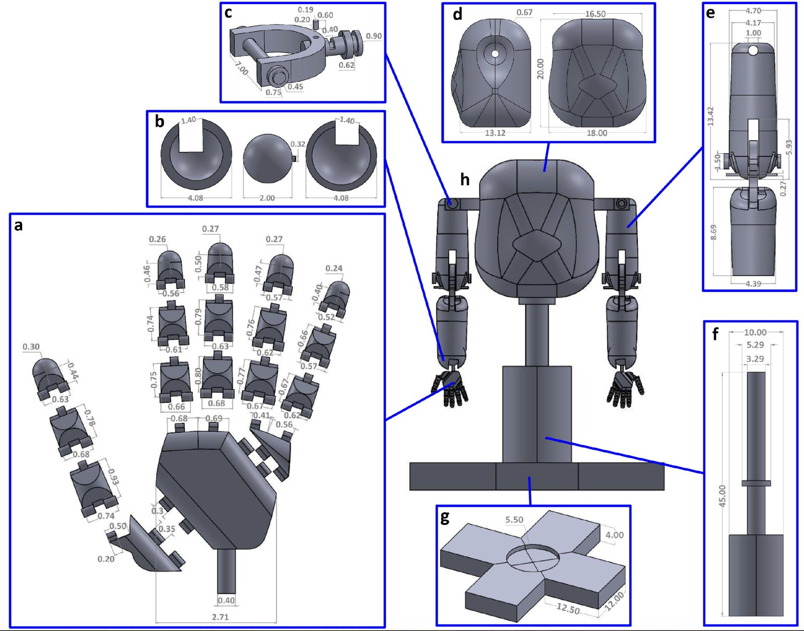
CAD models with detailed views of individual parts: (a) Hand segment, (b) Wrist joint, (c) Shoulder joint, (d) Torso, (e) Upper arm and forearm with elbow joint, (f) Rod stand, (g) Base for structural support, and (h) Full model. All measurements are provided in centimeters.
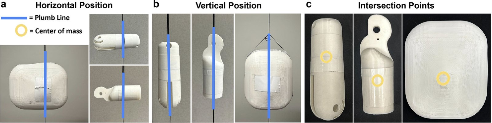
Center of mass (COM) location in upper arms, forearms, and torso determined using the plumb line method. (a,b) The position of the weighted string is highlighted in blue under both the vertical and horizontal testing conditions, and (c) the intersection points annotated in yellow indicate the COM location of the segment.
Model and literature-reported center of mass (COM) values, as % of segment length from the proximal end.
Body segment
Model (%)
Literature (%)
Upper arm
41.00
44.28
Forearm
47.00
45.41
Hand
44.16
44.95
Torso
66.00
–
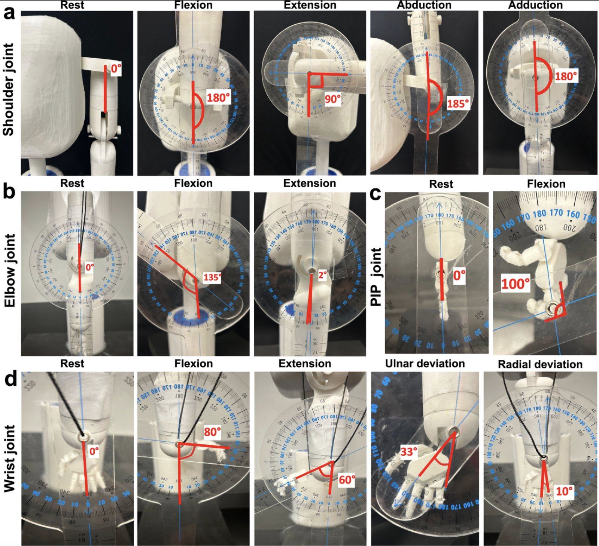
ROM in degrees of the joints measured using a goniometer. (a) Shoulder joint, (b) Elbow joint, (c) Proximal interphalangeal (PIP) joint, and (d) Wrist joint.
Model and literature-reported joint range of motion (ROM), in degrees.
Design of a Microfluidic Device for Synthesis of Hollow-Core BIPORES Fibers
Undergraduate capstone project, Biomaterials Innovation Laboratory, Bourns College of Engineering (BCOE), University of California, Riverside. Sept 2025 – May 2026. Advisors: Dr. Iman Noshadi and PhD student Kevin Dalsania.
I designed and fabricated, with a team of six, a reusable, modular microfluidic device that continuously extrudes hollow-core BIPORES (BIJEL-Integrated Porous Engineered Systems) fibers for vascular tissue engineering scaffolds. BIPORES are synthetic biomaterial scaffolds with an interconnected porous architecture that mimics native vascular tissue.
Problem: Traditional vascular scaffolds lack the interconnected architecture cells need to communicate and mature into tissue, and existing microfluidic devices cannot produce continuous hollow BIPORES fibers.
Design: A three-segment coaxial capillary assembly with compression fittings, a rail-guided alignment system and 23-gauge blunt needle fluid inlets. The custom rail system cut assembly time by 3x compared with manual assembly.
My contribution: Device design, fabrication, and validation through scanning electron microscopy (SEM), statistical fiber geometry analysis.
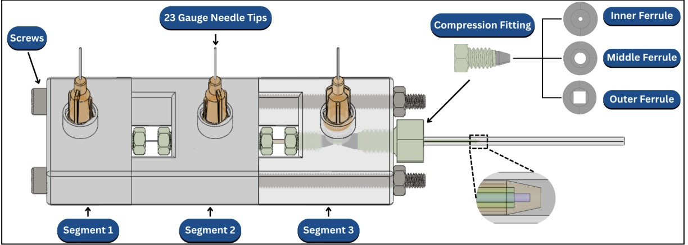
Current iteration CAD drawing of the final microfluidic device version with labeled components.
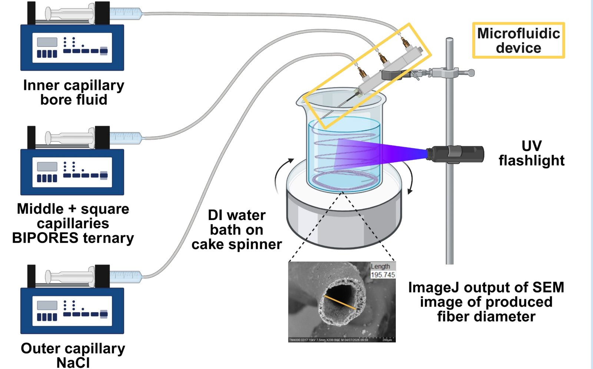
Device setup for hollow BIPORES fiber extrusion.
Targets and results
Objective
Target
Result
Fiber geometry
100–300 µm bore, 200–500 µm outer diameter
More than 80% of fibers within target ranges
Continuous extrusion
15 minutes
Up to 20 minutes
Hollow-core formation
–
100% hollow-core fibers, validated by SEM
Ease of assembly
25 minutes
3x faster than manual assembly with the rail system
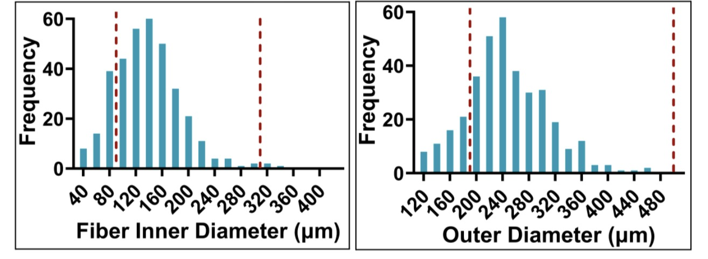
Histogram of measured BIPORES fiber inner diameters (left) and outer diameters (right) used for post-extrusion dimensional validation. The dotted red lines represent the ideal range in which the fiber diameters should fall under.
Fiber geometry was analyzed with a one-sample equivalence test (α = 0.05, df = 69): inner diameter p = 4.70 × 10−10, outer diameter p = 2.24 × 10−10.
Next developments
Integrate a UV curing module at the device tip for controlled polymerization.
Achieve a 30-second mounting time onto a custom bioprinter for rapid device setup and switching.
Seed the scaffold with endothelial cells to promote lumen formation.
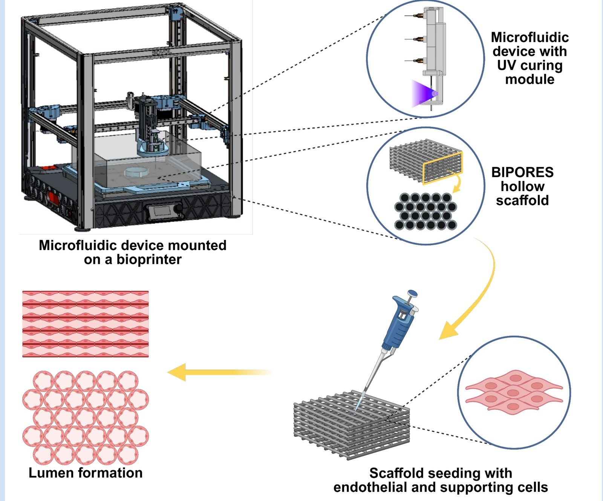
Microfluidic device with an integrated UV curing module mounted onto a custom-made bioprinter for continuous fiber extrusion. The extruded scaffold is seeded with endothelial and supporting cells to fabricate synthetic vascular structures.View the project poster (PDF)
Two-Segment Continuum Robot Arm
Class project, University of California, Riverside. April 2026 – May 2026
I modified and built a two-segment continuum spine robot based on the ENDO platform for surgical arm applications. Servo motors drive spine discs and ligaments through pulleys to produce bending motion in two independently controlled segments.
Design: I modified the platform in SolidWorks to a two-segment arm. Segment 1 uses shorter tendons tied off at the segment tip (pulley radius R₁ = 10 mm). Segment 2 uses full-length tendons (pulley radius R₂ = 20 mm).
Experiment: A motor isolation experiment on all 8 motors characterized the bending behavior, comparing measured bend angles with kinematically predicted values over three trials per motor.
Result: Every motor under-shot its predicted angle, with errors of about 49% to 69% across both segments. Under the current design parameters, the arm does not reach its desired maximum range of motion.
Likely cause: I attached the backbone to the disks with super glue, the only adhesive on hand. It cures stiffer than the design assumes and likely hindered bending, so the arm moved less than the kinematic model predicts.
Next step: Rebuild with a more flexible adhesive and repeat the motor isolation experiment to check whether the bend angles move closer to the predicted values.
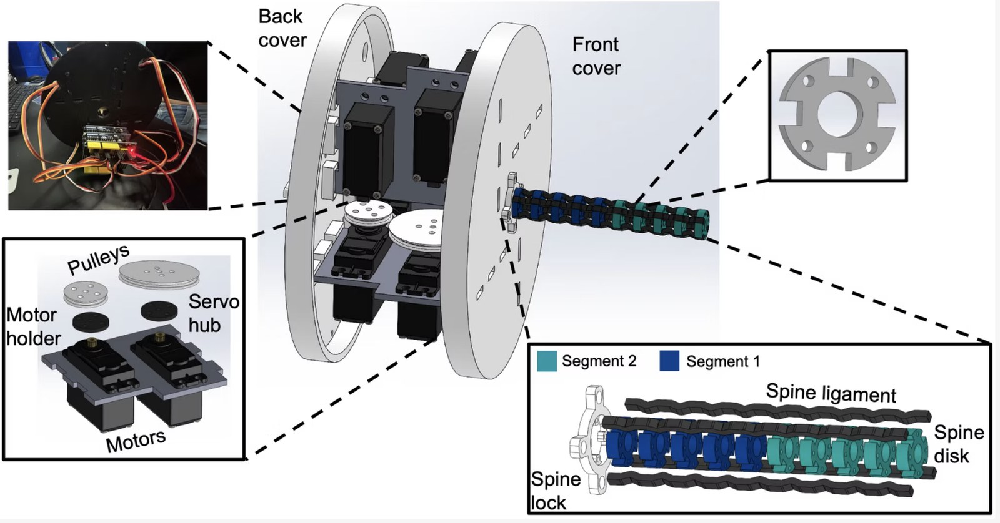
SolidWorks model of the two-segment robot. The housing holds the servo motors, motor holders, servo hubs and pulleys, with a photo of the wired electronics at upper left. The arm is built from spine disks, spine ligaments and a spine lock, grouped into Segment 1 (blue) and Segment 2 (teal).
Motor isolation experiment: measured bend angle (θ₂) for each motor over three trials, compared with the kinematically predicted angle.
Motor
Tendon direction
Servo input (°)
Predicted (°)
Trial 1 (°)
Trial 2 (°)
Trial 3 (°)
Mean (°)
Error vs predicted
Segment 1: short tendons tied off at the segment tip, pulley radius R₁ = 10 mm
M1
y+
90
63
20
21
30
23.67
−62.43%
M2
x+
90
63
25
23
22
23.33
−62.96%
M3
y−
90
63
24
23
24
23.67
−62.43%
M4
x−
90
63
19
19
20
19.33
−69.31%
Segment 2: full-length tendons tied off at the Segment 2 tip, pulley radius R₂ = 20 mm
M5
y+
60
88
45
45
43
44.33
−49.62%
M6
x+
60
88
31
30
31
30.67
−65.15%
M7
y−
60
88
36
35
33
34.67
−60.61%
M8
x−
60
88
23
30
30
27.67
−68.56%
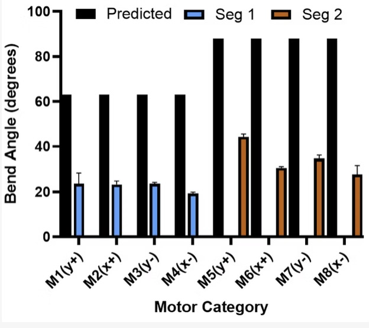
Mean measured bend angle for each motor compared with the predicted angle (black). Segment 1 motors (blue) were predicted at 63° and Segment 2 motors (brown) at 88°. Error bars show the variation across trials.
Segment 1 motors averaged 19° to 24° against a 63° prediction. Segment 2 motors averaged 28° to 44° against 88°, and the best result, motor 5 at 44°, was still about 50% below prediction.
Pneumatic Actuators for an Infant Wearable Exosuit
Undergraduate research, Pediatric Rehabilitation Technology Lab, Bourns College of Engineering (BCOE), University of California, Riverside. April 2023 – May 2023. Advisors: Dr. Elena Kokkoni and PhD student Ipsita Sahin.
I led the design, fabrication and assembly of pneumatic actuators intended for a wearable exosuit for infants. The goal was to evaluate which actuator sizes and shapes perform best for integration into a soft wearable assistive device.
Construction: Actuators are heat-sealed from thermoplastic sheets into different geometric shapes. Inner and outer border seams control the inflation geometry.
Assembly: Each unit has a rubber washer and an air inlet tube for pneumatic actuation. Units are stacked in alternating layers to form a complete actuator module.
Behavior: When pressurized with an air pump, the actuators expand predictably from a flat resting state to a fully inflated configuration, producing the motion needed to assist infant limb movement.
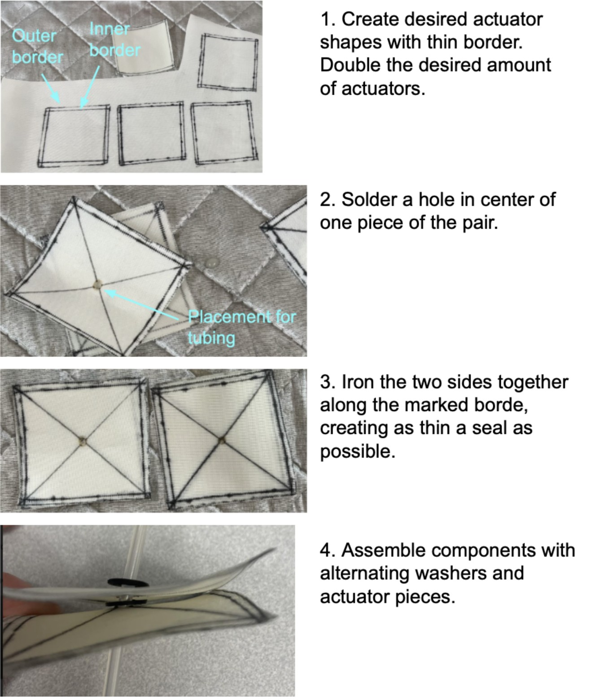
Fabrication process. Actuator shapes are marked with a thin border, with twice the number of pieces as actuators. A hole for the tubing is made in the center of one piece of each pair, the two pieces are sealed together along the border as thin a seal as possible, and the sealed units are assembled with alternating washers on the air tube.
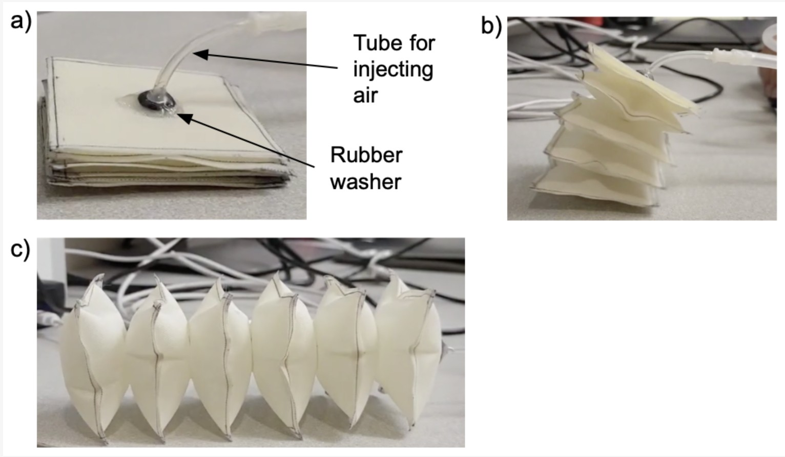
Actuator module during inflation. (a) The stack at rest in its flat state, with the air inlet tube and rubber washer on the top layer. (b) The module partway through inflation as the layers begin to separate. (c) The fully inflated actuator.
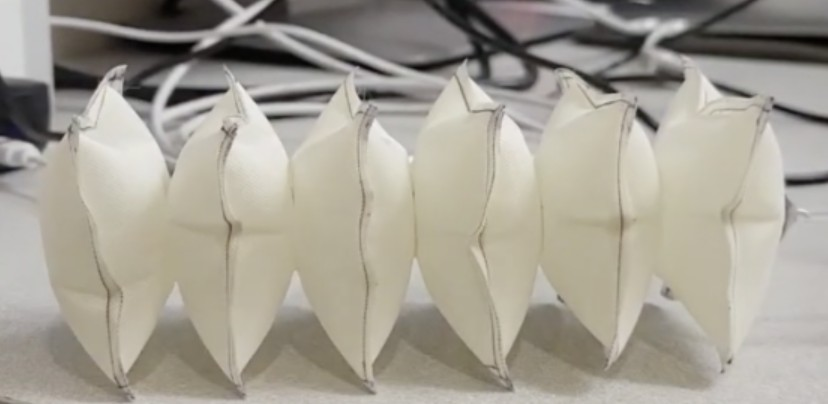
Side view of a fully inflated six-unit actuator module.
CFD Analysis of Stent Designs for Pulmonary Hemorrhage Treatment
Class project, University of California, Riverside. January 2025 – March 2025
I conducted a computational study comparing three stent designs (tube, torus and ring) for how well each blocks blood flow through a torn pulmonary capillary, to relieve the injury caused by pulmonary hemorrhage.
Geometry: Anatomical dimensions of an average adult lung capillary were set from a literature review and used for all models. The three stent geometries were modeled in SolidWorks and imported into COMSOL for fluid dynamics simulation.
Simulation: Each design was evaluated under physiologically accurate blood flow and material properties. The simulations produced velocity, pressure and shear stress distributions for both healthy and torn capillary conditions.
Result: The torus stent was the most effective of the three designs at restricting blood flow at the site of injury.
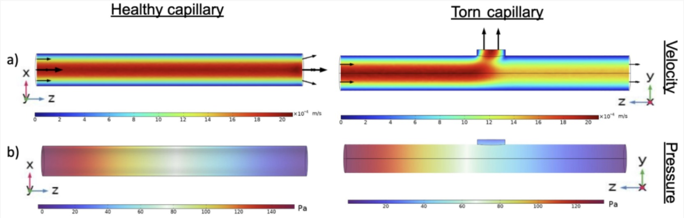
Baseline simulations of a healthy capillary (left) and a torn capillary (right). (a) Velocity: flow runs the full length of the healthy vessel, while in the torn vessel part of the flow escapes through the tear at the top. (b) Pressure: pressure drops along the vessel from inlet to outlet in both cases.
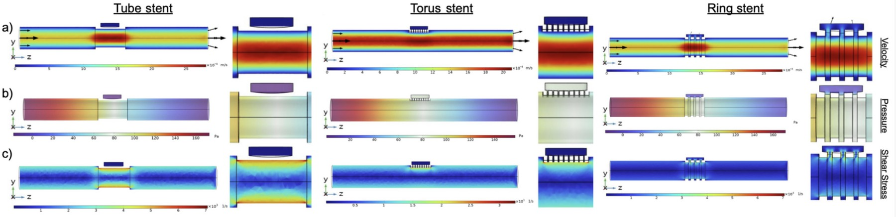
Simulation results for the tube, torus and ring stents placed over the tear in the torn capillary, each shown as a full-vessel view with an enlarged view of the stent region beside it. (a) Velocity, (b) pressure and (c) shear stress distributions.
Descriptor: A Dataset of Full-body Kinematics of Infants Sitting and Reaching in Natural Settings (KIRA)
Undergraduate research, Pediatric Rehabilitation Technology Lab, Bourns College of Engineering (BCOE), University of California, Riverside. April 2023 – May 2026. Advisors: Dr. Elena Kokkoni and PhD student Ipsita Sahin.
Associated paper under review.
I supported the development of an automated system that classifies types of infant motion from video. The system uses pose estimation and motion tracking software to analyze movement patterns, with the goal of reducing the manual effort needed to assess infant motor behavior in a research setting.
Need: Validating the automated system’s accuracy required human-labeled movement data as a ground truth reference.
Method: Using OpenPose for skeletal keypoint tracking and Kinovea for detailed motion analysis, I manually annotated and classified video clips of infant movement to build the comparison dataset.
The images below are not from this dataset, because the paper is still under review. They come from the same tracking software used in the work and illustrate the approach.
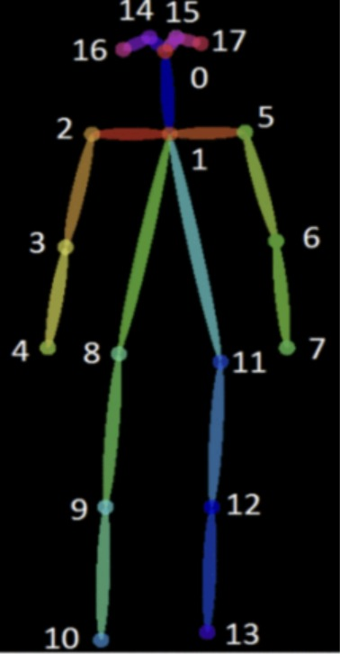
Example of skeletal keypoint tracking from pose estimation software. Numbered points mark the head, shoulders, elbows, wrists, hips, knees and ankles, and the colored segments connect them into a full-body skeleton that can be followed frame by frame.
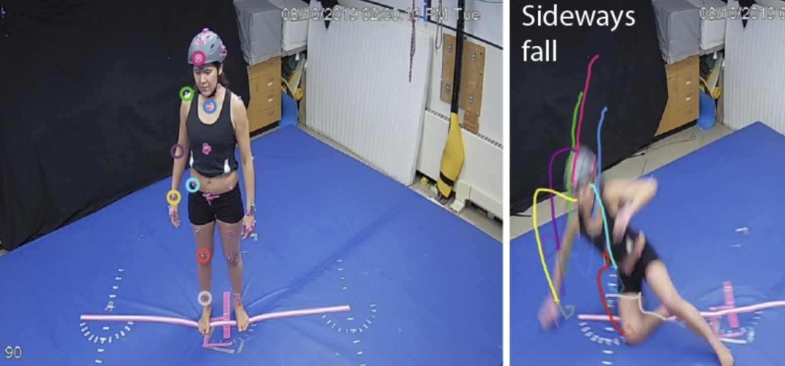
Example of motion tracking in video analysis. Colored circles mark body landmarks in the starting frame (left), and the colored paths in the later frame (right) trace how each tracked point moves through the movement.